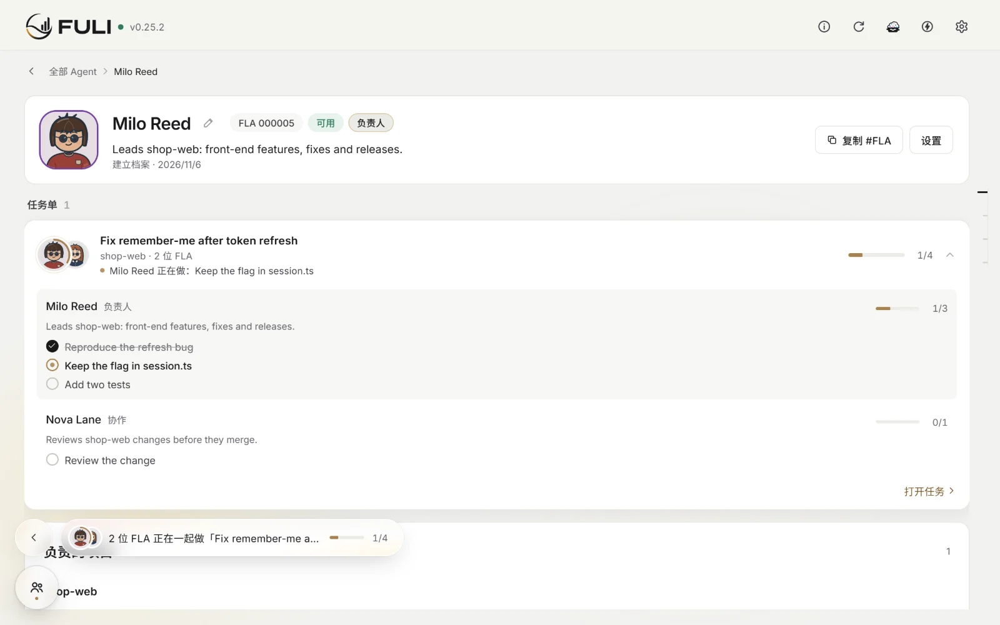
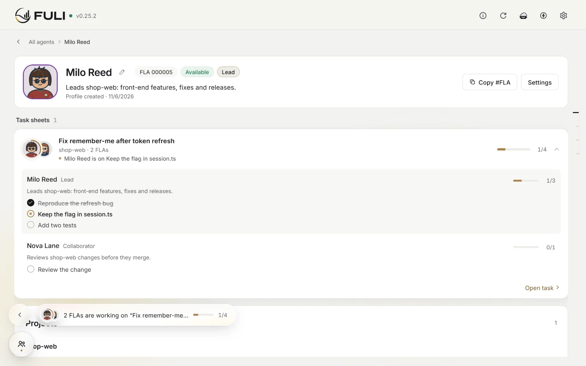
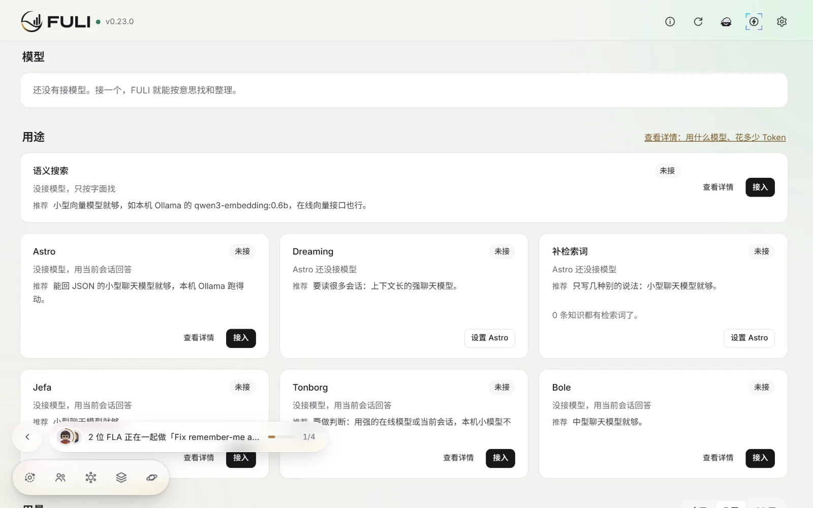
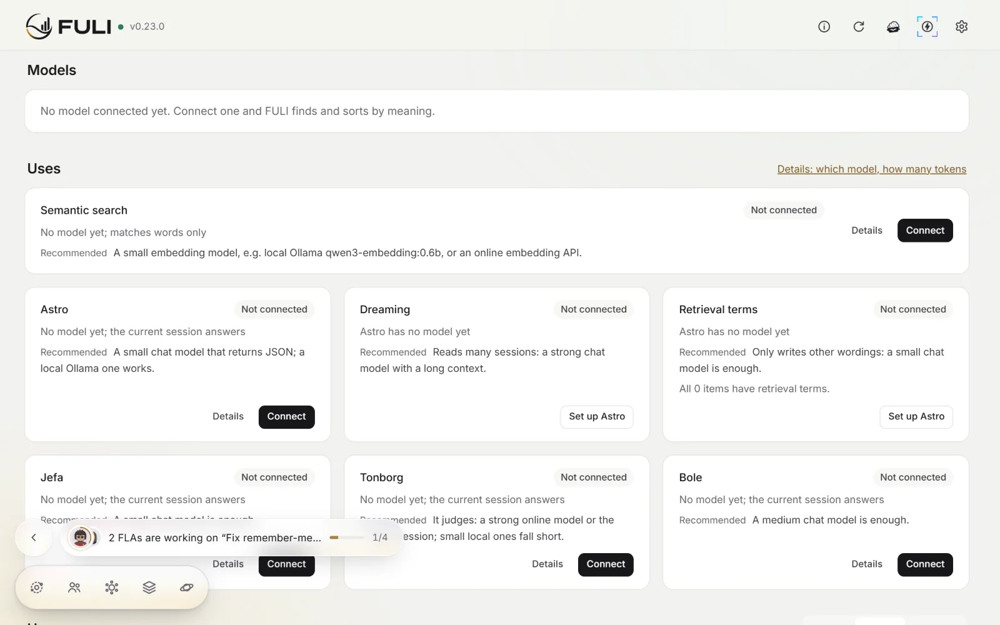

快速上手
装好，接上，照常干活。
第一次用 FULI：跟着截图一步步点，几分钟就能用上。按钮都写控制台里的原名。
下载最新版本
1安装桌面客户端
桌面客户端自带运行需要的一切：下载、安装、打开。
打开 FULI，它会自己启动，控制台在窗口里打开。没启动时，点「启动 FULI」。
虚拟机、云主机或服务器上用 npm：npm install --global fuli-context && fuli setup
2接入你的 AI 客户端
Claude Code、Codex、OpenCode 都能一键接入。
FULI
界面截图，数据为合成示例
- 接好后重启客户端。已经打开的会话要重开，才会用上新的 FULI。
- 用 Codex 的话：在 Codex 里输入
/hooks，信任 FULI 的 hooks。
- 「已接入」只说明配置在，不代表客户端已经连上。
3第一个任务
照常干活就行。下面用示例项目 orbit-ledger 走一遍。
FULI
~/orbit-ledger客户端里的一次对话（示意）
›结算日改按新加坡时间算，不用 UTC。
已改好 settlement job，测试都通过了。
FULI 本轮沉淀 1 条：
- 新增 事实「Settlement uses the Singapore date」｜Agent推断·待确认｜修改
FULI Agent：Kai Moreno
4
5
6
对话为示意，截图数据为合成示例
- 想让 AI 替你操作 FULI：设置 › 常用操作 里有能直接复制的说法。
4控制台里常用的几页
FULI


界面截图，数据为合成示例
每个空间都有的 FLA
 Astro · 接待与复盘
Astro · 接待与复盘 Jefa · 项目经理
Jefa · 项目经理 Bole · Agent 资源
Bole · Agent 资源 Tonborg · 判断
Tonborg · 判断
5可选：接一个模型
不接也能用：AI 用当前会话回答，FULI 按字面找知识。
FULI


界面截图，数据为合成示例
按意思找：语义搜索
- 在「语义搜索」点「接入」，模型来源选「本机 Ollama」，模型选或填
qwen3-embedding:0.6b。
- 也可以选「在线服务」，地址可从建议里选（如千问），模型从列表里选。
- 打开「使用下面配置的模型」，保存。在「查看详情」里能点「测试连接」。
用 Ollama 要先在本机装好它，并下载这个模型。
老知识：补检索词
- 先给 Astro 接上模型，在它的设置里打开「允许补老知识的检索词」。
- 选一个项目，先看免费估算：多少条缺检索词、大约多少 tokens。
- 点「先试 20 条」，看补前补后能找回几条，再决定「补剩下 N 条」或「不补」。
- 补的时候，模型按钮的外圈会慢慢填满。
补的时候随时可以点「停止」。
模型指南：每种用途要什么模型、实测花多少 token
6遇到问题
- FULI 会自己体检。顶栏出现「有 N 件事需要你」时点「查看」，能修的点「自动修复」。
- Windows 上没启动成功、提示端口被保留时，在托盘菜单选「换一个端口」。
- 顶栏版本号旁出现小圆点就是有新版本：点版本号打开 设置 › 版本，点「更新到 v…」。
- 更新不删知识。更新后，已经打开的 AI 会话要重开。
- 要找开发者：设置 › 系统 › 诊断包，点「生成诊断包」再「导出」。里面没有知识和对话。
反馈问题
完整文档